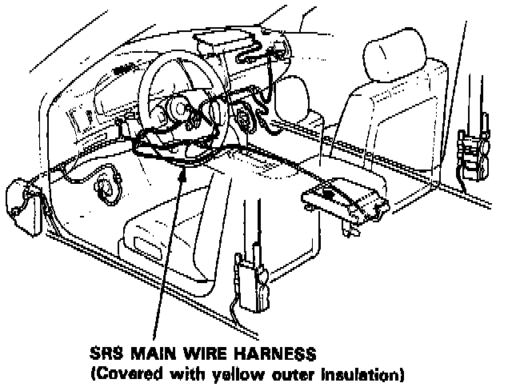
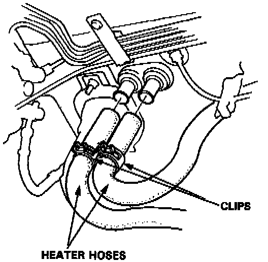
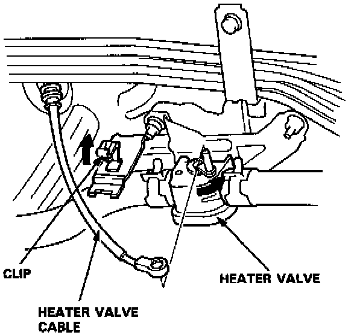
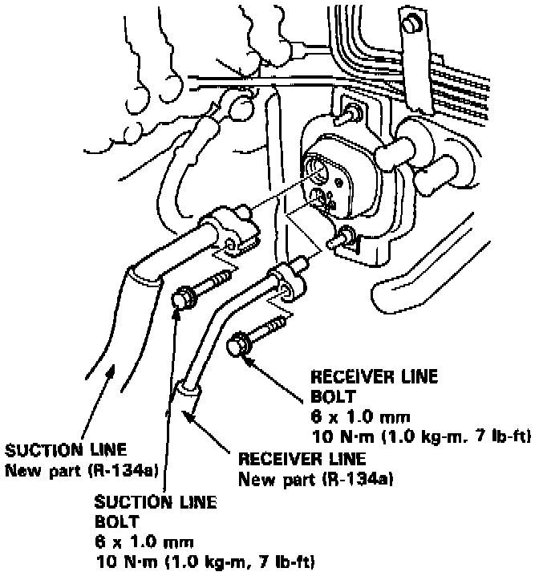
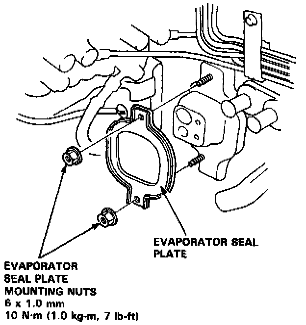
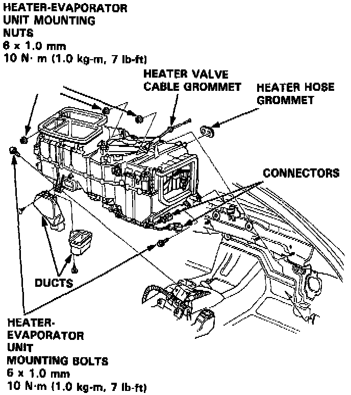
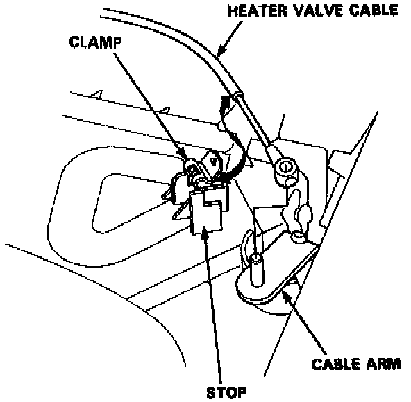
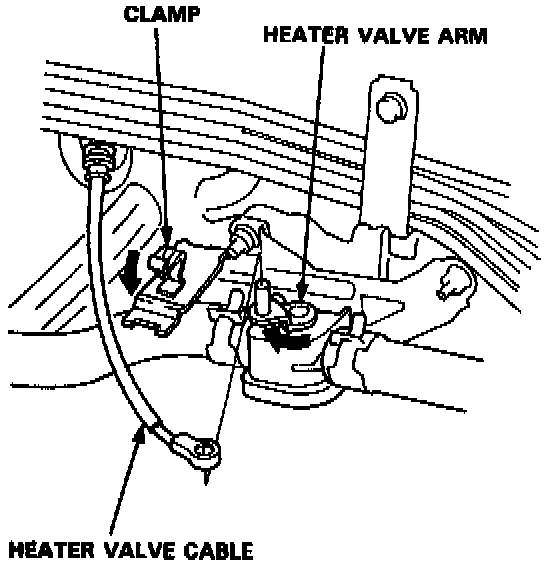
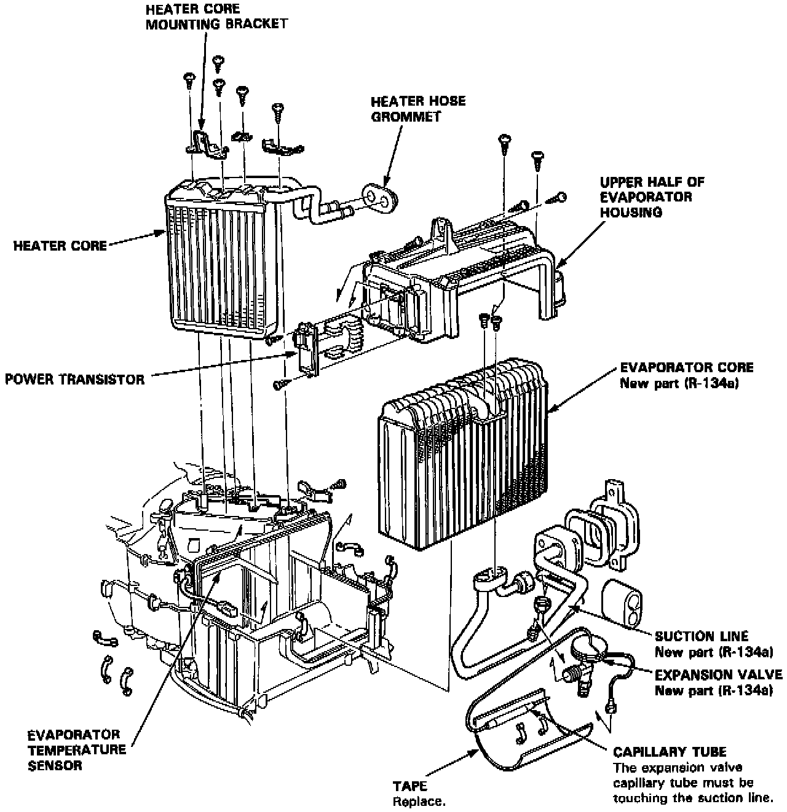

Heater Unit/Core Replacement

CAUTION:
- All SRS wiring harnesses are covered with yellow outer insulation.
- Before disconnecting any part of the SRS wire harness, install the short connectors.
- Replace the entire affected SRS harness assembly if it has an open circuit or damaged wiring.
HEATER-EVAPORATOR UNIT REMOVAL
1. Remove the dashboard. Service and Repair
NOTE: The L and LS model radios may have a coded theft protection circuit. Be sure to get the customer's code number before:
- Disconnecting the battery.
- Removing the No. 56 (7.5A) fuse in the under-hood fuse/relay box.
- Removing the radio.
After service reconnect power to the radio an turn it on. When the word "CODE" is displayed, enter the customer's 5-digit code to restore radio operation.
2. Remove the blower unit. Service and Repair
3. When the engine is cool, drain the engine coolant from the radiator.
WARNING:
- Do not remove the radiator cap when the engine is hot; the engine coolant is under pressure and could severely scald you.
- Keep hands away from the radiator fan. The fan may start automatically without warning and run for up to 15 minutes, even after the engine is turned off.
CAUTION:
- Engine coolant will damage paint. Quickly rinse any spilled engine coolant off pained surfaces.

4. Release the clamps and disconnect the heater hoses. Engine coolant will run out when the heater hoses are disconnected, drain it into a clean drip pan.

5. Disconnect the heater valve cable from the heater valve.
6. Recover the refrigerant from the A/C system with a R-134a refrigerant Recovery/Recycling/Charging System.

7. Remove the suction line bolt and receiver line bolt, then disconnect the suction line and receiver line.
NOTE: Plug or cap the lines immediately after disconnecting, to avoid moisture and dust contamination into the system.

8. Remove the evaporator seal plate mounting nuts and evaporator seal plate.

9. Remove the ducts and disconnect the connectors, then remove the heater-evaporator unit mounting nuts and bolts.
10. Disconnect the air mix control motor connector. Then, remove the heater-evaporator unit.
11. Install the heater-evaporator unit in the reverse order of removal, and:
- If you're installing a new evaporator, add refrigerant oil (ND-OIL 8).
- Replace 0-rings with new ones at each fitting, and apply a thin coat of refrigerant oil before installing them.
NOTE: Be sure to use the right 0-rings for R-134a to avoid leakage.
12. Fill the radiator and reservoir tank with the proper engine coolant mixture. Bleed the air from the cooling system.
CAUTION: Follow the sequence described in the air bleed procedure. If you don't, you may leave air in the system which could damage the engine.

13. If necessary, adjust the heater valve cable on the heater-evaporator unit side:
- Set the air mix control motor at COOL position.
- Connect the end of the heater valve cable to the cable arm.
- Gently slide the heater valve cable outer housing back from the end enough to take up any slack in the heater valve cable, but not enough to make the other end move the arm on the air mix control motor. Hold the end of the heater valve cable housing against the stop, then snap the heater valve cable housing into the clamp.

14. Adjust the heater valve cable on the heater valve side:
- Set the air mix control motor at COOL position.
- Turn the heater valve arm to shut and connect the end of the heater valve cable to the heater valve arm.
- Gently slide the heater valve cable outer housing back from the end enough to take up any slack in the heater valve cable, but not enough to make the other end move the arm on the air mix control motor. Then snap the clamp down over the heater valve cable housing.
15. Turn the blower on and make sure that there is no air leakage.
16. Charge the system.
17. Test system performance.
HEATER-EVAPORATOR UNIT OVERHAUL

1. Remove the heater core mounting bracket, remove the clamps from the inlet and outlet lines, then lift out the heater core.
2. Remove the upper half of the evaporator housing, the remove the evaporator core.
3. Remove the expansion valve if necessary.
4. Assemble the heater-evaporator unit in the reverse order of disassembly. Hold the expansion valve capillary tube down against the suction line, and wrap it with tape to hold it there.